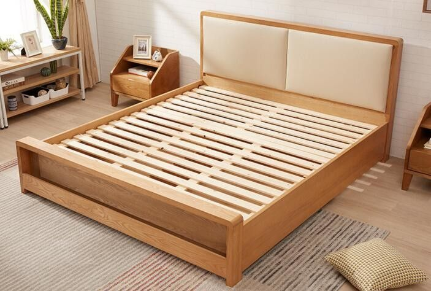
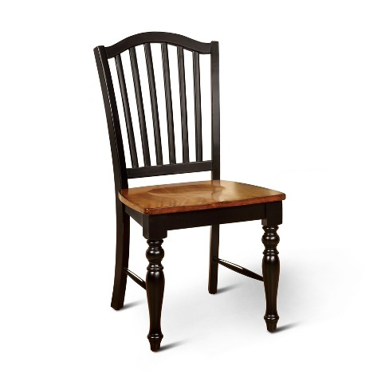
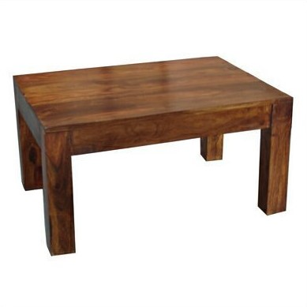

As a woodworking company, we strive to provide the best products and services to our customers and our expertise in furniture is no exception. Here at Pear Woodworking, a wide variety of furniture is available, ranging from bed frames for your cozy home to desks for the office. Never again will you worry about the discomfort of a creaking bed or a unbalanced chair when you have our quality craftsman-made furniture, whether it be at home or the workplace.
Check out our collection of hand-crafted furniture below!
| IMAGE | PRODUCT | DESCRIPTION |
|---|---|---|
|  | BED FRAMES | Single, Twin*, Queen, King, you name it, we got it! With only 4 bed sizes it is quite surprising that there are so many ways a bed frame can be built. Only sturdy, durable, aesthetically pleasing bed frames are manufactured by our craftsman. *XL version of the Twin size bed frame is also avaliable |
|  | WOODEN CHAIRS | From the kitchen to the outdoors, the wooden chair is a common seat that has great use. Pear Woodworking provides a wide array of chairs for you to sit on and enjoy. |
|  | TABLES | In many places where people call home, it is a near guarantee that there will be a table of some kind, whether it is placed in the kitchen, bedroom, or the home office.Tables manufactured at Pear Woodworking come in all of the types stated above. |